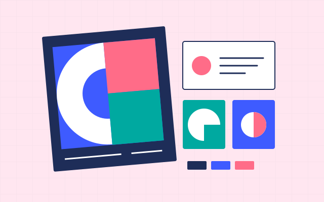
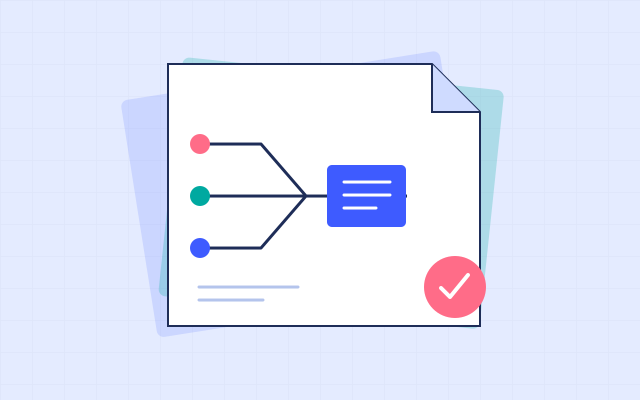
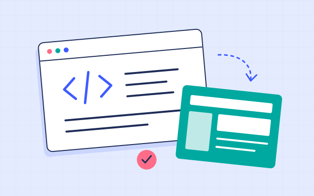
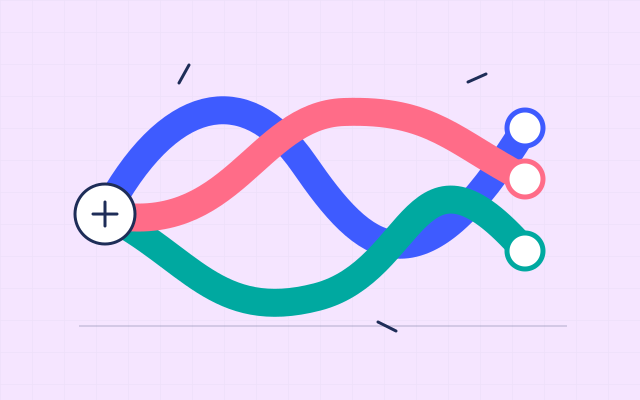

Learning design · Documentation · Digital content
Making complex
work clear.
My background spans dance, education and software. I use critical thinking to map complex work and turn it into clear learning materials, documentation and digital content.
01 / Selected work
Projects
A selection of documentation, learning, research and teaching work.
01 Learning design · Video
Instructional videos
02 Brand identity · Web development
Brand and website development

03 Process mapping · Documentation
Process mapping and user manual

04 Research · Education technology
Research into e-learning authoring tools
05 Learning design · Interactive courses
E-learning projects
06 Course design · Blended learning
Blended course for academic staff

07 Teaching · Facilitation
Dance teaching and workshops

Notes on learning
Learning goal matcher
Match Storyline interaction patterns to learning goals, with links to the underlying studies.
I’m Edit Domoszlai. For much of my career I worked as a professional dancer, performing with companies including Rambert in London. I knew I wanted to keep learning alongside that work, so I studied while touring and later chose a part-time MA in Education and Technology at UCL Institute of Education.
That programme brought together education, technology, interaction design and research. My dissertation examined how e-learning authoring tools shape the work of instructional designers and received UCL’s Exceptional Dissertation Award.
After returning to Hungary, I joined a software development team in QA. I investigated product behaviour, documented workflows and created guidance for people using new digital systems. At the same time, I developed the identity and website for Gradient Contemporary Ballet Debrecen and continued teaching dance.
These experiences inform how I work now: I ask how a system functions, what people need to understand, and which form of explanation helps them act.
03 / Approach
The format follows the need.
I start with the audience and what they need to do, then choose the form that helps them.
-
01ANALYSE
Analytical thinking
I look closely at how something works and where people get stuck. At GG Development, that meant investigating software behaviour and making the logic clear through workflows and documentation.
-
02MAKE
Designing solutions
I turn ideas into things people can use, from a website or user manual to an instructional video or workshop structure. I define the purpose before choosing the form.
-
03CONNECT
Systems thinking
I trace connections between modules, decisions and people. Mapping the price engine across systems helped different teams work from a shared explanation of the feature.
-
04DEVELOP
Continuous learning
I studied at UCL while touring, learned front-end development by building a website, and expanded into QA and business analysis support. I test ideas in practice and revise what I make.
-
05ADAPT
Audience-specific content
I create manuals and diagrams for product teams, task videos for platform users, web content for public audiences, and movement instructions for workshop participants. I adjust the medium, language and level of detail to what each group needs to understand or do.
-
06QUESTION
Critical thinking
My work in dance, education and software gives me several ways to examine a problem. I question assumptions, look for connections and test an explanation against evidence before choosing a format or solution.
04 / Contact
Contact.
For learning design, documentation or a project collaboration, get in touch.
edit.domoszlai@gmail.com LinkedInBudapest · Working internationally